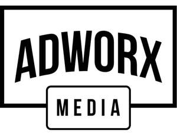

Trade Mark Journal No.2025/041 10 October 2025
UK00004271969 30 September 2025 (35,38,42)

- Class 35
- Digital advertising services; Advertising services; Advertising and marketing services; Advertising and promotional services; Promotional and advertising services; Promotional advertising services; Advertising, marketing and promotional services; Advertising, promotional and marketing services; Marketing, advertising, and promotional services; Graphic advertising services; Advertising, marketing and promotion services; Marketing, advertising and promotion services; Advertising and promotion services; Advertising and advertisement services; Advertising agency services; Marketing services; Services of advertising agencies; Advertising research services; Promotional marketing services using audiovisual media; Digital marketing; Planning services for advertising; Providing advertising services; Advertising and marketing services provided via communications channels; Advertising services for the promotion of beverages; Advertising services relating to financial services; Advertising services for the literary industry; Research services relating to advertising and marketing; Advertising, promotional and public relations services; Marketing services provided by means of digital networks; Marketing agency services; Provision of computerised advertising services; Advertising services relating to jewelry; Advertising particularly services for the promotion of goods; Business marketing services; Advertising services relating to cosmetics; Advertising services relating to pharmaceuticals; Advertising services relating to the travel industries; Advertising and marketing; Advertising services relating to books; Advertising services relating to pharmaceutical products; Advertising; Promotion, advertising and marketing of on-line websites; Advertising services provided for florists; Advertising services relating to clothing; Direct marketing services; Advertising services relating to perfumery; Advertising services provided over the internet; Advertising services relating to the provision of business; Research services relating to advertising; Advertising services provided via the internet; Advertising services relating to the transport industries; Promotional services; Advertising services relating to hotels; Announcement services for advertising purposes; Advertising services to promote the sale of beverages; Media buying services; Advertising services relating to financial investment; Advertising services to create corporate and brand identity; Customer loyalty services for commercial, promotional and/or advertising purposes; Corporate communications services; Rental of digital billboards; Advertising, including on-line advertising on a computer network.
- Class 38
- Digital communications services; Digital communication services; Digital transmission services; Digital network telecommunications services; Online communications services; Electronic communications services; Mobile media services in the nature of electronic transmission of entertainment media content; Interactive broadcasting and communications services; Electronic messaging services; Internet broadcasting services; Communications services; Multimedia messaging services; Information transmission services via digital networks.
- Class 42
- Hosting electronic memory space on the Internet for advertising goods and services; Programming of software for online advertising; Technical services for the downloading of digital data.
Adworx Media LTD